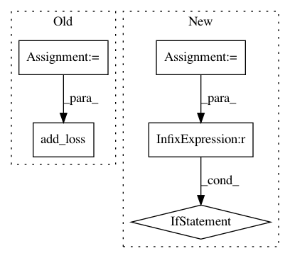

b87589cd9adfc43f62365fd4bcb06ea47c589a8c,tensorflow/python/ops/losses/losses_impl.py,,compute_weighted_loss,#Any#Any#Any#Any#Any#,141
Before Change
losses = ops.convert_to_tensor(losses)
input_dtype = losses.dtype
losses = math_ops.cast(losses, dtype=dtypes.float32)
weights = math_ops.cast(weights, dtype=dtypes.float32)
weighted_losses = math_ops.multiply(losses, weights)
if reduction == Reduction.NONE:
loss = weighted_losses
else:
loss = math_ops.reduce_sum(weighted_losses)
if reduction == Reduction.MEAN:
loss = _safe_mean(
loss, math_ops.reduce_sum(array_ops.ones_like(losses) * weights))
elif (reduction == Reduction.SUM_BY_NONZERO_WEIGHTS or
reduction == Reduction.SUM_OVER_NONZERO_WEIGHTS):
loss = _safe_mean(loss, _num_present(losses, weights))
elif reduction == Reduction.SUM_OVER_BATCH_SIZE:
loss = _safe_mean(loss, _num_elements(losses))
// Convert the result back to the input type.
loss = math_ops.cast(loss, input_dtype)
util.add_loss(loss, loss_collection)
return loss
@tf_export(v1=["losses.absolute_difference"])
After Change
// supported so it only causes unnecessary ops. Also skip it because it uses
// a DenseToDenseSetOperation op that is incompatible with XLA when
// the shape(s) are dynamic.
if control_flow_ops.get_enclosing_xla_context() is not None:
return compute_loss(losses, weights, loss_collection, reduction)
else:
with ops.control_dependencies(
(weights_broadcast_ops.assert_broadcastable(weights, losses),)):
return compute_loss(losses, weights, loss_collection, reduction)
@tf_export(v1=["losses.absolute_difference"])
@dispatch.add_dispatch_support
def absolute_difference(
labels, predictions, weights=1.0, scope=None,
In pattern: SUPERPATTERN
Frequency: 3
Non-data size: 5
Instances
Project Name: tensorflow/tensorflow
Commit Name: b87589cd9adfc43f62365fd4bcb06ea47c589a8c
Time: 2021-04-22
Author: rxsang@google.com
File Name: tensorflow/python/ops/losses/losses_impl.py
Class Name:
Method Name: compute_weighted_loss
Project Name: tensorflow/tensorflow
Commit Name: b87589cd9adfc43f62365fd4bcb06ea47c589a8c
Time: 2021-04-22
Author: rxsang@google.com
File Name: tensorflow/python/ops/losses/losses_impl.py
Class Name:
Method Name: mean_pairwise_squared_error
Project Name: analysiscenter/batchflow
Commit Name: a8620b9e034f4e45138c253dd78709775f8e5c63
Time: 2017-10-13
Author: rhudor@gmail.com
File Name: examples/simple_but_ugly/tf_models.py
Class Name: MyModel
Method Name: _build